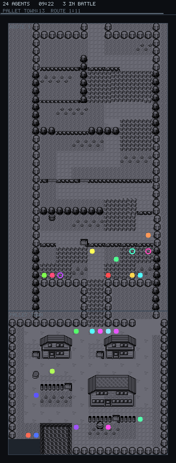
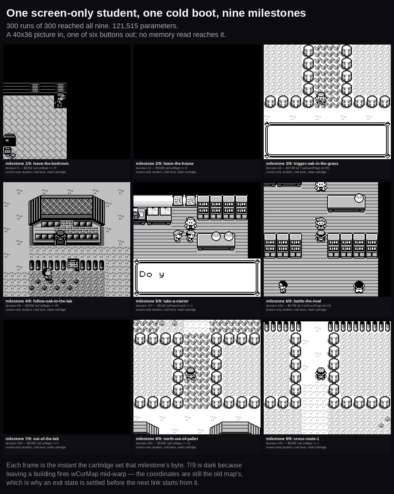

Standing page · AgentGB
AgentGB, over time.
A neural player that reads nothing but the screen, from a random-walk floor where nobody leaves the first town to a sixteen-link chain from a cold boot. The arc in order, with the number that was true at each point, and then the ledger of what is still not true.
Where it stands today
One committed set of weights driving a sixteen-link chain from a cold boot to the Pokédex in Oak's hand.
The standing reporting rule
Per starter, every certification, every swarm
A 26-agent swarm once read 23/26, and every one of the three failures was the same starter. Since then every rate is broken out.
| Starter | Completed | Rate | 95% interval |
|---|---|---|---|
| BULBASAUR | 87 / 90 | 96.7% | 90.7–98.9% |
| CHARMANDER | 13 / 13 | 100.0% | 77.2–100.0% |
| SQUIRTLE | 45 / 47 | 95.7% | 85.8–98.8% |
| All | 145 / 150 | 96.7% | 92.4–98.6% |
No starter anywhere near zero, all three intervals overlapping heavily. The starter itself is the student's own choice and is read back off the cartridge by the harness — the network never sees which one it took.
What it chooses when nobody forces it
A real three-way starter split, measured on the shipped weights
An earlier generation of this student collapsed at the entry tile — one button at probability 1.0000, zero bits of entropy, the same starter every single boot. The committed weights do not. At the chain's own entry state the first decision carries 0.992 bits of entropy, and over 500 sampled attempts the outcome is genuinely three-way:
| BULBASAUR | CHARMANDER | SQUIRTLE | Reached the goal |
|---|---|---|---|
| 254 (50.8%) | 118 (23.6%) | 127 (25.4%) | 499 / 500 = 99.8% |
That is a learned distribution, not a broken selection mechanism. It does not make Bulbasaur's two-to-one edge desirable — that is a property of one training draw on a network with a measured 23-point run-to-run band. But pushing harder on the corpus at this one decision is not the fix, because the decision is already reading real signal.
models/pixel-student.npz · sha256 b2bb7908…7262c109 ·
N=500, sampled T=1.0, gate 0.80
The floor it had to beat
Before anything was trained, the opposite of a trained agent was measured, so every later number would have something to beat.
Twenty-four Game Boys · no learning at all

What the floor actually reads
- Still in Pallet Town
- 54.97% of samples, after ten emulated minutes
- Northern Route 1
- Empty in every frame
- Reached Viridian City
- No agent, ever — not here, and not in a longer control
- Concentration
- 5% of the tiles visited hold 37% of the time
Route 1's ledges are a one-way valve: a random walk drifts south through them and cannot climb back. That is the shape of the problem, and it is why "the agent reached Viridian City" is a claim worth making at all.
The arc, stage by stage
Dates begin on 16 August 2026, where this repository's history begins. The stages before that are ordered but not dated.
The floor, measured before anything else
Twenty-four emulated Game Boys on a decorrelated random walk. Nobody reaches Viridian City. Published because a target with nothing under it is not a target.
0 agents leave the first town
The cartridge keeps its own score
The reward substrate: success is a byte the cartridge writes, read out of the machine at the moment a goal is claimed, with host-enforced no-memory-writes so nothing the policy does can make that byte lie.
2,660 tiered tests, generated from a pinned atlas
The teacher walks to Cerulean City
A scripted expert that solves the route it is pointed at. Not the product — the thing a student is trained to imitate, and the yardstick every student failure is measured against.
cold cartridge → Cerulean City · 26 links · 1 m 44 s
The first trained thing
A student on a feature vector — reading structured game state, not pixels. Three links, certified hard, and two of its own published numbers corrected in the same pass.
100% · 100% · 99.8% at 3,000 attempts each
A network that sees the screenscreen only
The features go away. From here on the policy gets a 4 × 36 × 40 picture and nothing else — no coordinates, no map id, no memory read of any kind.
5 links · 300/300 cold boots
The first fight, on three foreign emulators
The rival battle, and the same weights driven on emulators this project did not write. Reaching a milestone and winning the fight are separated in the reporting, because the cartridge sets the milestone whoever won.
6 links · 300/300 reached · 245/300 won
The day that added nothing
No new links. A day spent proving that two numbers this project had already published were not readable, and finding a run-to-run training band nobody had controlled for. Stages 7 and 8 are trustworthy because of it. Read it →
a 23-point band between identical training runs
Out of Pallet Town, into Viridian City
Nine links end to end from a cold boot — the floor's own impossible result, reached from a starting point of 7 runs in 300.
9 links · 300/300 cold boots, up from 7/300
Adapters instead of retrainsfrozen base
Two failures that had nothing to do with walking — a nickname prompt and a trainer battle — were fixed without touching the base network, by small learned nudges that fire only when their own recogniser sees their own screen. This is the mechanism everything after it is built on.
base weights proven byte-identical before and after every adapter
The star pupil is committed, and runs on somebody else's emulator
One named, hashed file becomes the thing that ships, exported to ONNX and driven through the opening chain on mGBA's libretro core from a genuine cold power-on — every matrix multiply through a foreign runtime, none through our own.
11 milestones · 578 decisions · seed 0 · mGBA
The route doubles back, and a text trigger solves it
Viridian City and Route 1 are each crossed twice, in opposite directions, and a screen-only policy provably cannot tell the crossings apart. A recogniser on the cartridge's own announcement latches a different behaviour instead.
16 links · both doubling-back rooms 100.0% · whole chain 145/150
Eighteen links attemptednot certified
Two more links past the Pokédex, driven by a second latched stage with no trained nudge at all. Two independent N=16 draws read 13/16 and then 9/16, and a third mechanism layered on to help made it measurably worse. Left as it measured.
18 links · 13/16, then 9/16 · the helper retired from the default
Chain length, by date
How far one cold boot gets, and what it was measured at each time. The last bar is drawn open because it is an attempt, not a certification.

Three rules the failures wrote
Each came out of something going wrong in a way the summary number would have hidden.
Rule one
A rate with no model name attached is not a verified rate
This repository names its models. A number quoted without its
.npz identity has been separated from the only thing that makes
it re-runnable — and separated numbers drift. Every rate on this page carries
the file it was measured on.
Rule two
Report per starter, on everything
A swarm that read 88.5% was hiding a split of 21/21, 2/2 and 0/3. The aggregate was fine; one whole third of the population was failing every time. Nothing about the headline said so.
Rule three
More epochs is not a fix for a blind tile
A junction the student got wrong stayed wrong across two independent training draws — more epochs, more corpus, different seed, identical failure. That is a competence gap in one place, not seed noise, and it needs a different answer.
What is still not true
What has not been shown, in the same place as what has.
- Sixteen links is the game's opening, not the game. The chain ends with the Pokédex in hand, in the second town. Everything after that is unbuilt.
- The eighteen-link chain is not certified and is not close. Two independent N=16 draws read 13/16 and 9/16. On the new stage the split by starter is SQUIRTLE 4/12 against BULBASAUR 17/18 — reproduced across both draws, not chased to a cause.
- Part of that is the room, not the student. The new link's own teacher — the scripted expert, not a network — solves only 620 of 800 episodes in its own corpus, with several held-out tiles dead at 16/16. That is a navigation trap in the map, and it puts a ceiling under anything trained on it.
- The corpus-bias question cannot be answered from what is on disk. No corpus this project writes records which starter a rollout was playing, so the split above is measured from outcomes rather than read from the training data.
- Exact recorded seeds do not replay. Inference-time floating-point non-associativity across BLAS-thread configurations flips a near-tie early in a long sampled trajectory and the whole run diverges — so a per-decision replay is not evidence about the specific episode it was meant to explain, and is not quoted as such.
- N=150 is not N=3,000. The headline certification bounds failure near 2%, not 0.1%. The 3,000-attempt convention exists for a reason and this run did not meet it.
- The foreign-emulator sweep is behind the student. The mGBA run covers the eleven-link opening. Nothing portable has been re-run at sixteen.
Where these numbers come from. Every rate was produced by this project's certification and swarm tooling against a named weights file, recorded beside the command that produced it, its sample size, its temperature and its confidence interval.
A milestone reached is never reported as a fight won. The cartridge sets the milestone either way, and the two are counted separately everywhere they appear.
The mechanism behind the sixteen-link result: the wall you hit walking home. The per-starter rule came out of a swarm that scored 88.5%, and the seed band out of the day that added nothing. The network itself is on the AgentGB project page.
← Back to devlog